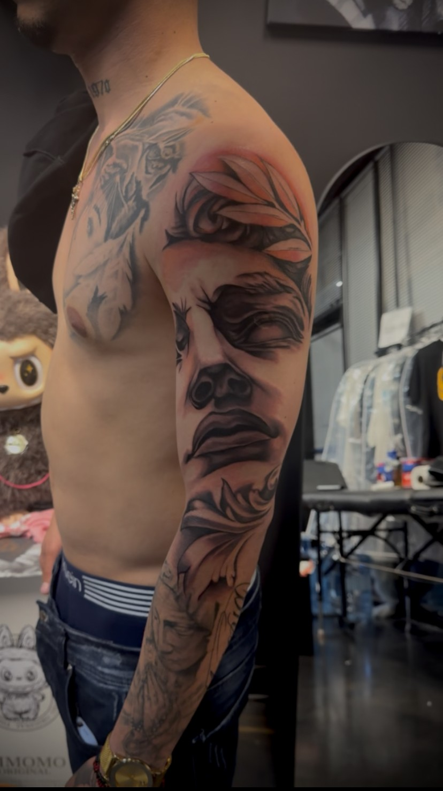
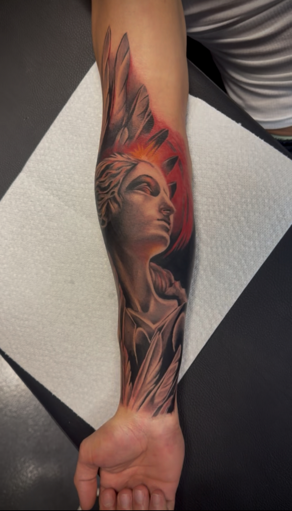
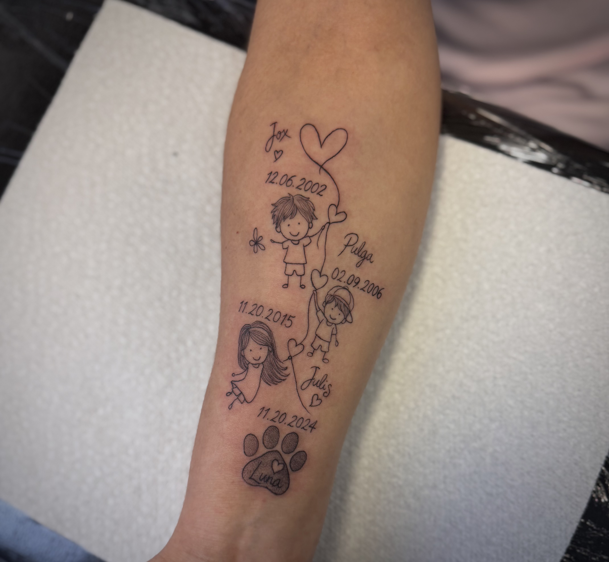
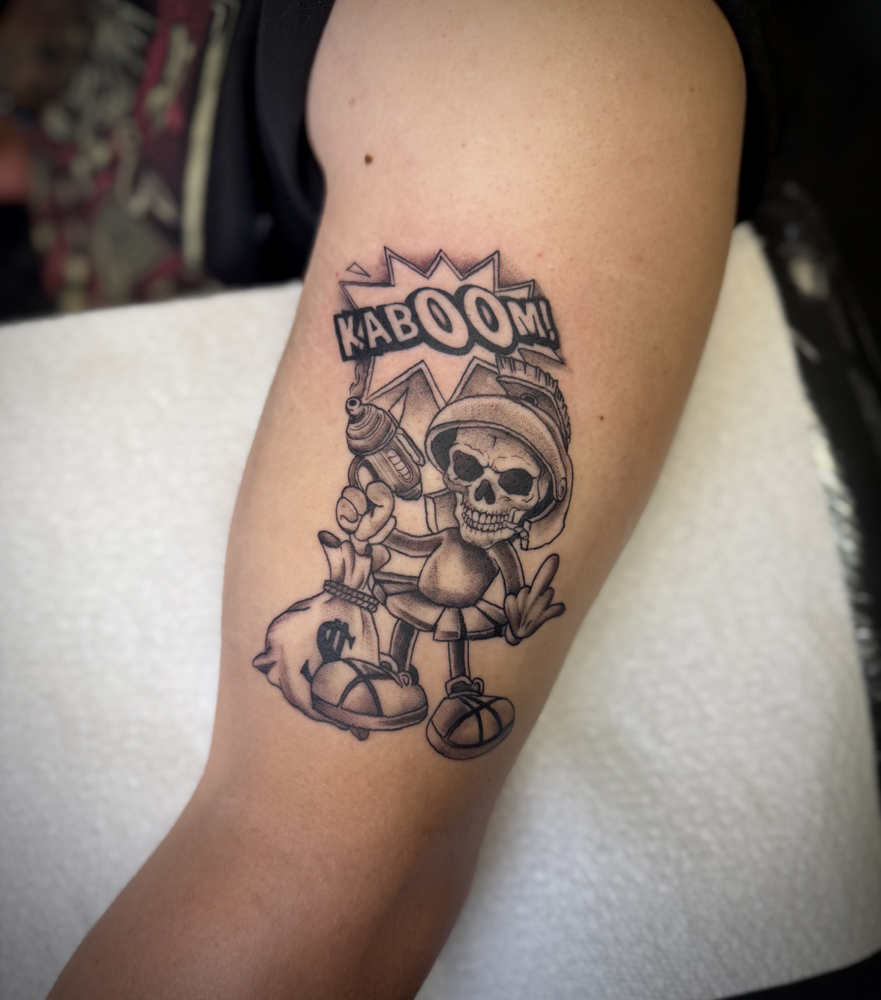
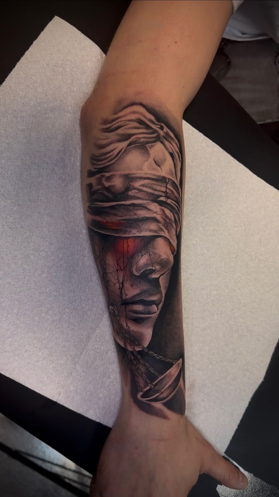
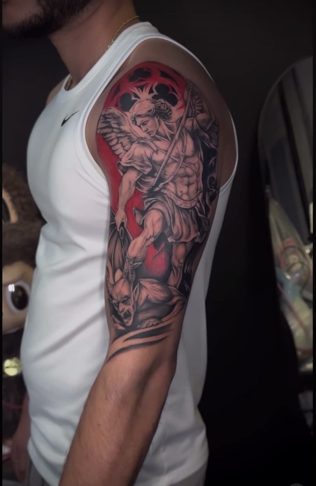
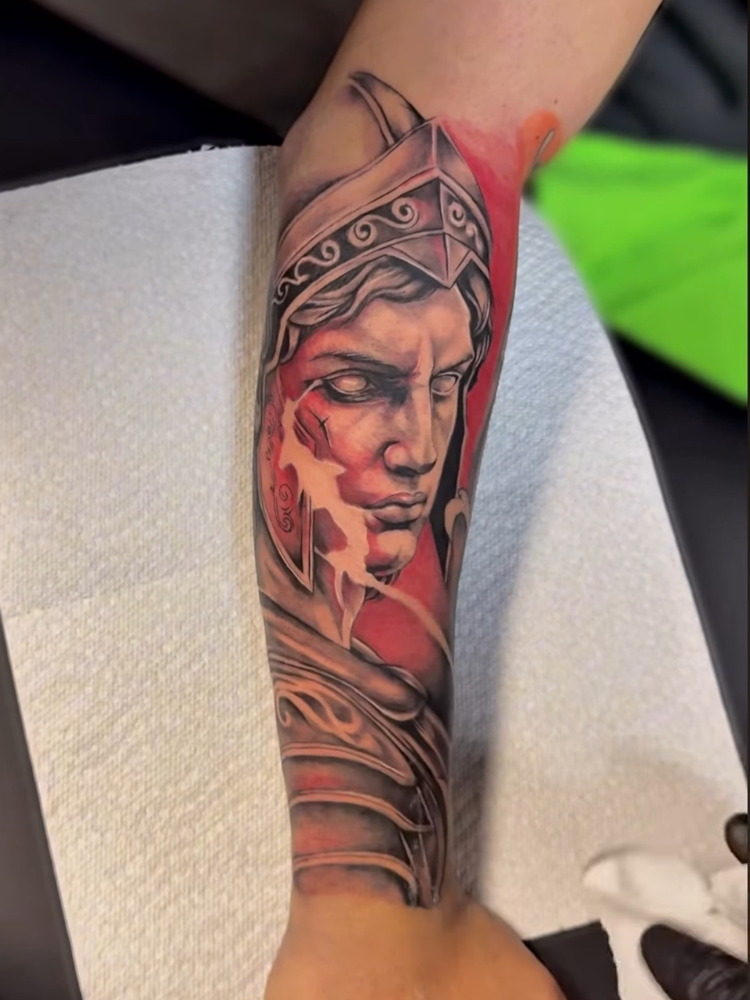
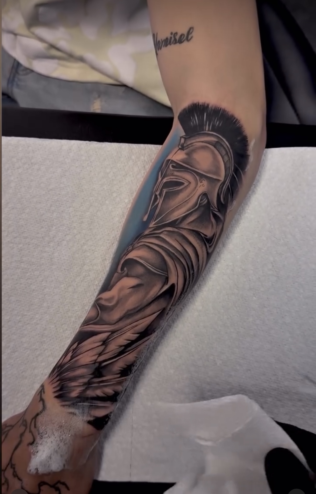

About Elier – Tattoo Artist at Horimu Studio
Specializes in:
Realism Tattoo
Other Styles:
- Black & Grey Tattoos
- Color Tattoos
Elier is a tattoo artist at Horimu Studio specializing in realism, black & grey, and color tattoo work. With a strong foundation in fine arts, he focuses on light, shadow, and structure.
His work emphasizes depth, texture, and lifelike detail, especially in portraits, animals, and high-detail compositions.
Each tattoo is built with careful attention to realism principles to ensure long-lasting visual impact.
Elier’s Tattoo Work







